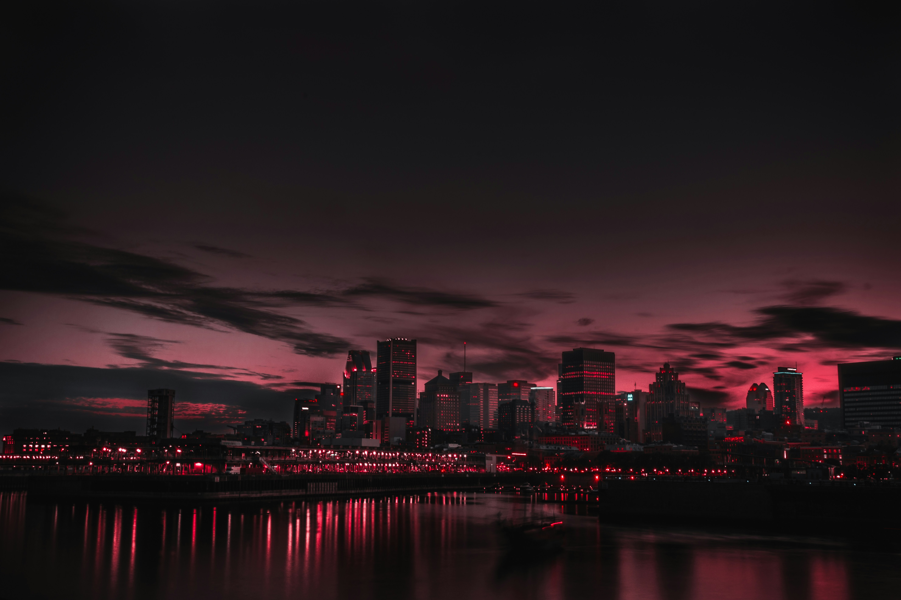

Recent Projects
Photography Portfolio
Welcome to my photography portfolio. This collection showcases some of my
favorite photography projects, including landscape, wildlife, and urban
photography. Each project reflects the passion photographers have for capturing unique moments
and telling stories through images.
Forest Collection

This project focuses on capturing the beauty of sunrise in mountain
landscapes. The photographs highlight vibrant colors, dramatic lighting,
and the peaceful atmosphere found in nature during the early morning hours.
View Similar Photography
Wildlife Encounters

Wildlife photography requires patience and careful observation.
This project features animals in their natural habitats and aims
to showcase the beauty and diversity of wildlife while promoting
appreciation for nature and conservation.
Wildlife Photography Inspiration
City Life Photography

This collection captures the energy and movement of urban environments.
The photographs focus on architecture, street scenes, and everyday
moments that reveal the character and personality of city life.
Learn More About Urban Photography